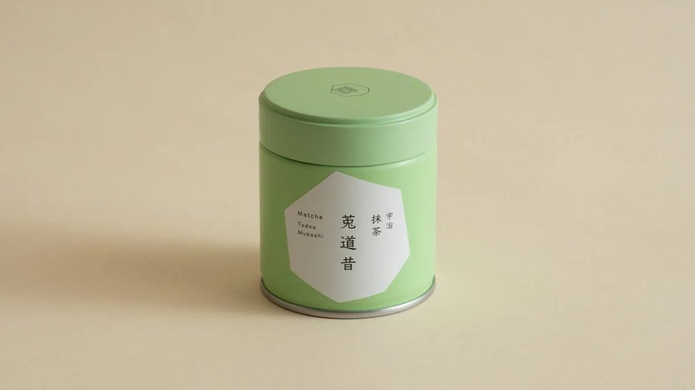
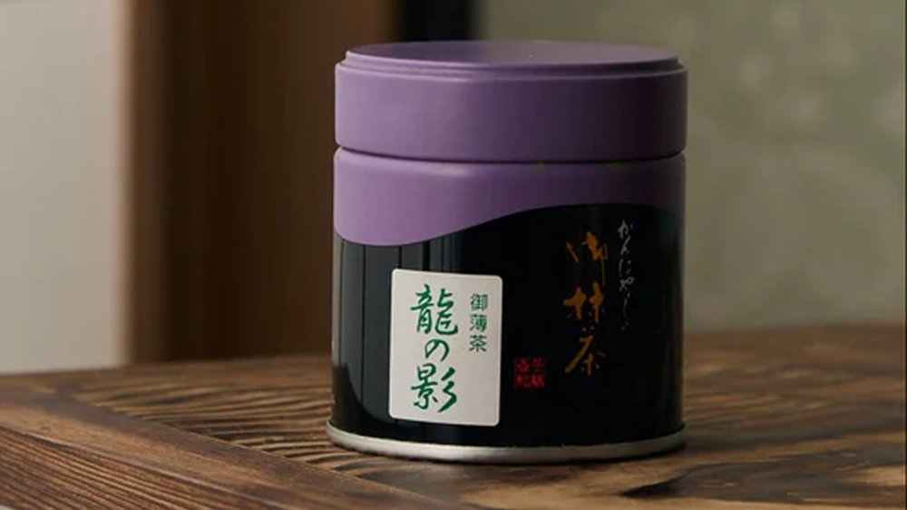
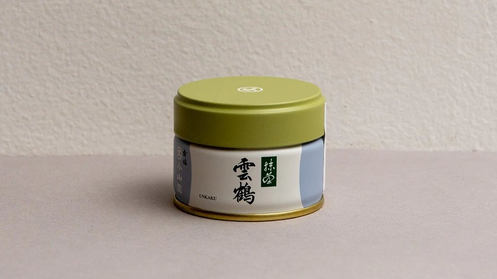
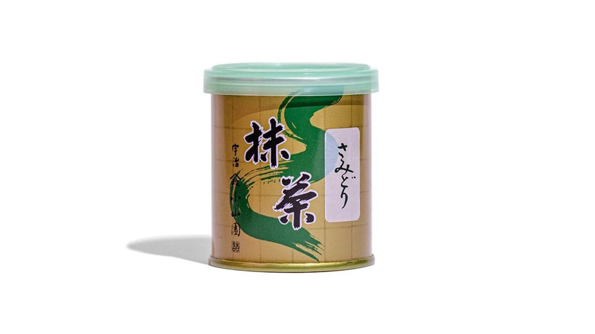
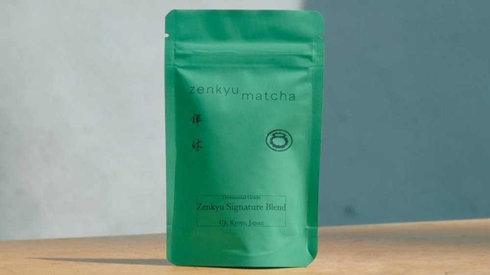

kitasando / coffee
kitasando / coffee

kitasando / home goods

omotesando / coffee

harajuku / food

harajuku / food

harajuku / outdoor gear

harajuku / outdoor gear

harajuku / outdoor gear

harajuku / outdoor gear
harajuku / outdoor gear

harajuku / yarn

omotesando / yarn

aoyama / coffee

higuma doughnuts × coffee wrights →
omotesando / coffee

aoyama / home goods

aoyama / home goods

harajuku / home goods

harajuku / home goods

aoyama / matcha

harajuku / outdoor gear

harajuku / outdoor gear

daikanyama / clothing
daikanyama / food
shibuya / food
daikanyama / food
shibuya / food
daikanyama / food
hightide store · miyashita park →
shibuya / home goods
shibuya / matcha
shibuya / matcha

shibuya / outdoor gear
daikanyama / outdoor gear

shibuya / outdoor gear
tachyon pants
ultralight
dynamo pants
lightweight
versalite pants
midweight
storm cruiser pants
heavyweight / hardshell
versalite shell
super dry-tec 3l hardshell
tachyon anorak
ultralight windshell
wic uvtect upf50+ hoody
sun hoody, upf 50+
stellaridge tent + snow fly
3-season + winter extension
trail action gloves
light trail / approach
gore-tex overmitts
hardshell overmitt
hats
trail sun hats + beanies
neck gaiters / buffs
wic + fleece options
gaiters
trail to alpine sizing
dry + compression bags
stuff sacks, dry bags, compression rolls
camp + down booties
ul insulated camp footwear
u.l. trekking umbrella
ultralight, sun + rain
mountain research · general store →
nakameguro / outdoor gear

daikanyama / outdoor gear
daikanyama / outdoor gear
daikanyama / outdoor gear

shibuya / yarn

tomigaya / clothing
nishihara / food

yoyogi / matcha

yoyogi-uehara / coffee

tomigaya / coffee
yoyogi-uehara / coffee
nishihara / coffee
yoyogi-uehara / coffee
nishihara / coffee
tomigaya / coffee
tomigaya / food
nishihara / home goods
nishihara / home goods
tomigaya / home goods
shinjuku / camera
yodobashi camera · shinjuku west →
shinjuku / camera
shinjuku / food
shinjuku station / matcha

horii shichimeien
matcha
narino (single cultivar)
agata no shiro (usucha)
todou mukashi (high usucha)

kanbayashi
matcha
biwa no shiro (mid usucha)
matsukaze mukashi (entry koicha)
ryokumo no mukashi (koicha-grade)

marukyu koyamaen
matcha
wako (top usucha)
kinrin (premium usucha)
chigi no shiro (mid usucha)
isuzu (entry usucha)
aoarashi (entry usucha)

yamamasa koyamaen
matcha
ogurayama (premium ceremonial)
shikibu no mukashi (high ceremonial)
matsukaze (daily usucha)

zenkyu matcha
matcha
single origin okumidori (single cultivar)
signature blend (ceremonial)
uji latte blend (latte-grade)
shinjuku / matcha
arc'teryx · shinjuku (yodobashi) →
shinjuku / outdoor gear
mont-bell shinjuku minamiguchi →
shinjuku / outdoor gear
tachyon pants
ultralight
dynamo pants
lightweight
versalite pants
midweight
storm cruiser pants
heavyweight / hardshell
versalite shell
super dry-tec 3l hardshell
tachyon anorak
ultralight windshell
wic uvtect upf50+ hoody
sun hoody, upf 50+
stellaridge tent + snow fly
3-season + winter extension
trail action gloves
light trail / approach
gore-tex overmitts
hardshell overmitt
hats
trail sun hats + beanies
neck gaiters / buffs
wic + fleece options
gaiters
trail to alpine sizing
dry + compression bags
stuff sacks, dry bags, compression rolls
camp + down booties
ul insulated camp footwear
u.l. trekking umbrella
ultralight, sun + rain

hatagaya / outdoor gear

ippodo tea · shin-marunouchi →
nihonbashi / matcha
kanza (flagship)
silky umami / sweet aroma
kuon (premium)
rich umami / nutty / bright floral
ummon (high-grade)
robust umami / punchy / classic
sayaka (mid-grade)
smooth / lightly sweet / most popular
kan-no-shiro (mid-grade)
mild / refreshing / slight bitter finish

horii shichimeien
anywhere / matcha
narino (single cultivar)
double umami / creamy
agata no shiro (usucha)
roasted nut / vanilla / mild umami
todou mukashi (high usucha)
deep umami / nutty / smooth

kanbayashi
anywhere / matcha
biwa no shiro (mid usucha)
caramel sweet / macadamia / sandalwood
matsukaze mukashi (entry koicha)
toasty nutty / bold umami
ryokumo no mukashi (koicha-grade)
deep umami / rich / full-bodied

marukyu koyamaen
anywhere / matcha
wako (top usucha)
smooth umami / grassy / long sweet finish
kinrin (premium usucha)
creamy / rich umami / minimal bitterness
chigi no shiro (mid usucha)
velvety / grassy / gentle acidity
isuzu (entry usucha)
sharp / acidic / rich amino acids
aoarashi (entry usucha)
robust / gentle bitter / bold

yamamasa koyamaen
anywhere / matcha
ogurayama (premium ceremonial)
marine umami / creamy / mild sweet
shikibu no mukashi (high ceremonial)
toasted sesame / creamy umami / lingering
matsukaze (daily usucha)
balanced / mild / light bitter finish

zenkyu matcha
anywhere / matcha
single origin okumidori (single cultivar)
chestnut sweet / creamy
signature blend (ceremonial)
smooth umami / toasty nutty / well-balanced
uji latte blend (latte-grade)
bold umami / creamy / nutty / latte-forward

anessa · perfect uv sunscreen (gold)
anywhere / skincare / sunscreen

anessa · perfect uv sunscreen mild
anywhere / skincare / sunscreen

bioré · uv athlizm sunscreen
anywhere / skincare / sunscreen

curél · intensive moisture facial cream
anywhere / skincare / moisturizer

curél · uv milk sunscreen
anywhere / skincare / sunscreen

hada labo · shirojyun premium toner
anywhere / skincare / toner

matsuyama · hadauru moisturizing cream
anywhere / skincare / moisturizer